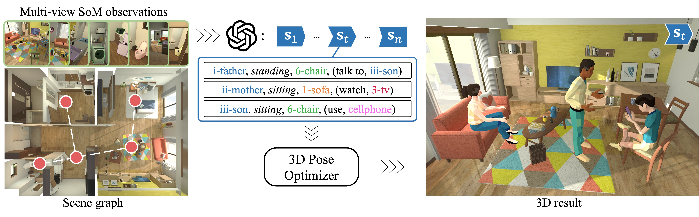
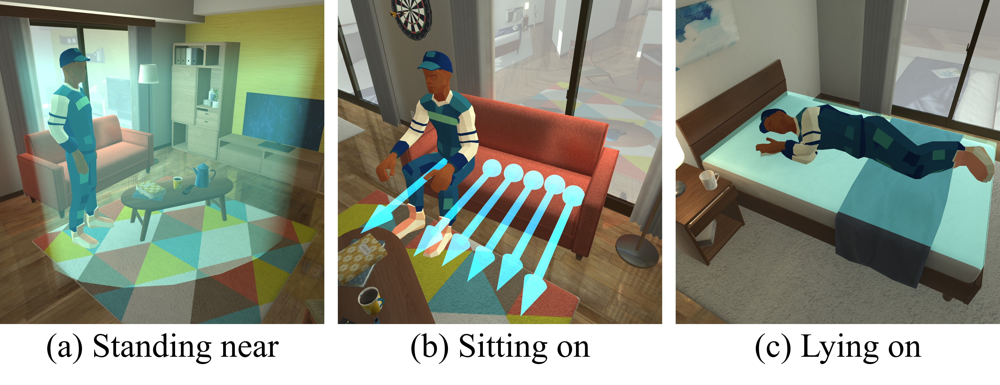
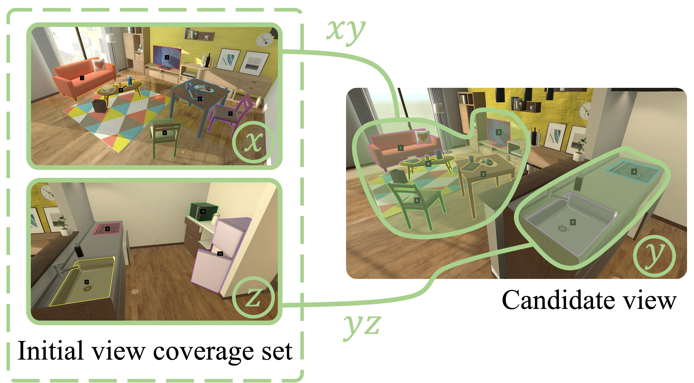
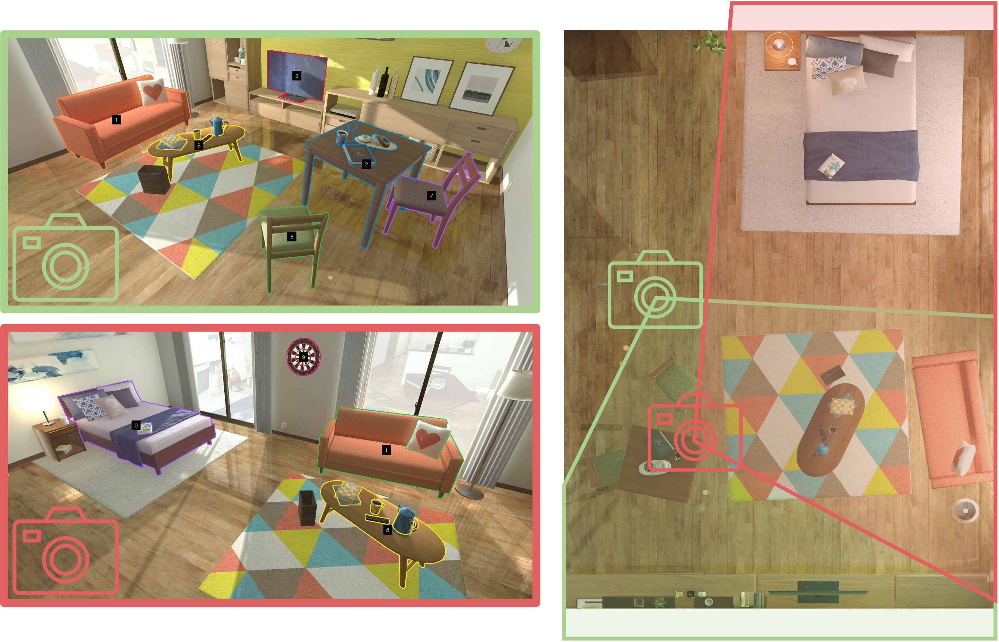
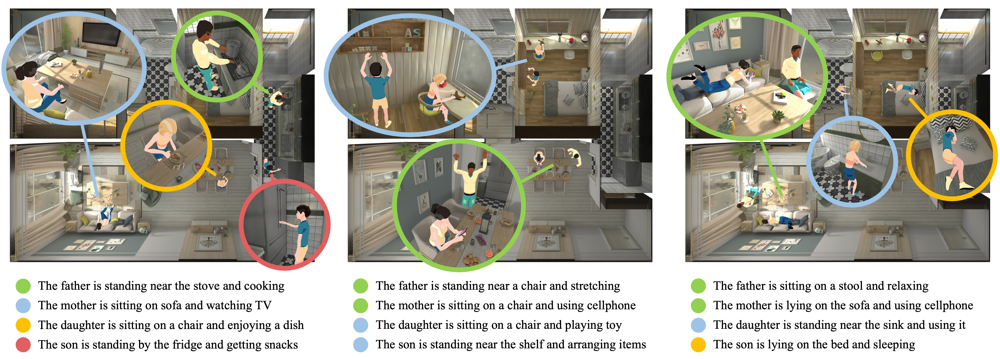
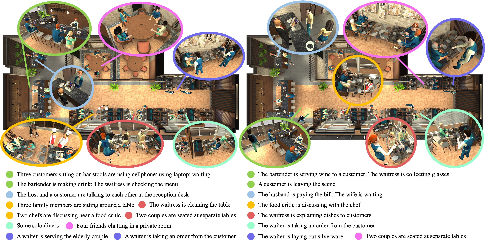
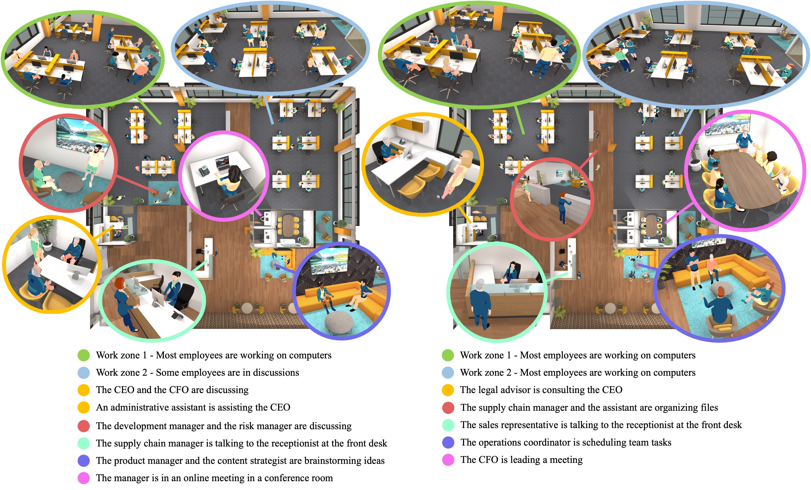
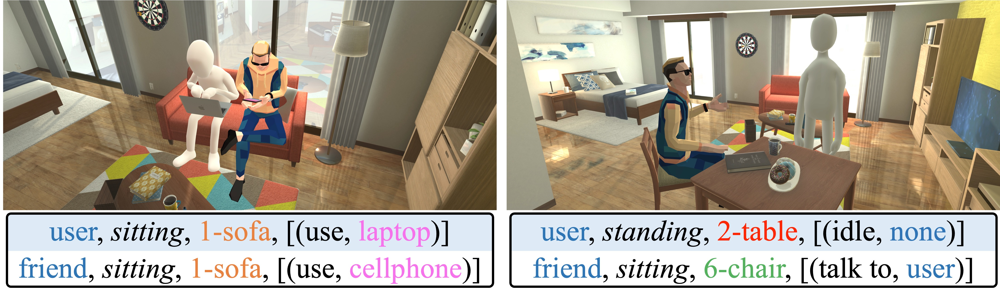
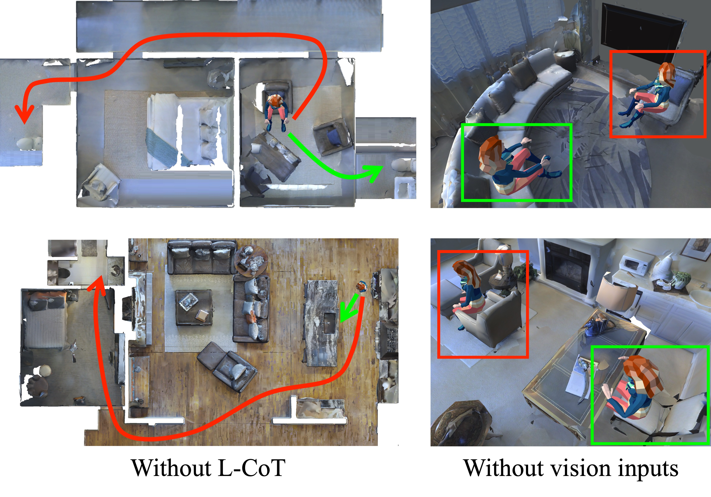
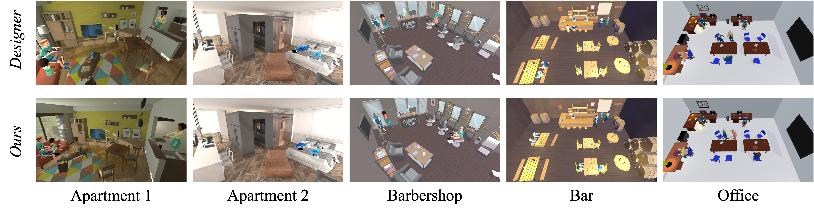

In this paper, we investigate the use of multimodal large language models (MLLMs) for generating virtual activities, leveraging the integration of vision-language modalities to enable the interpretation of virtual environments. Our approach recognizes and abstracts key scene elements including scene layouts, semantic contexts, and object identities with MLLMs’ multimodal reasoning capabilities. By correlating these abstractions with massive knowledge about human activities, MLLMs are capable of generating adaptive and contextually relevant virtual activities. We propose a structured framework to articulate abstract activity descriptions, emphasizing detailed multi-character interactions within virtual spaces. Utilizing the derived high-level contexts, our approach accurately positions virtual characters and ensures that their interactions and behaviors are realistically and contextually appropriate through strategic optimization. Experiment results demonstrate the effectiveness of our approach, providing a novel direction for enhancing the realism and context-awareness in simulated virtual environments.










@article{Li2025Crafting,
title={Crafting Dynamic Virtual Activities with Advanced Multimodal Models},
author={Changyang Li, Qingan Yan, Minyoung Kim, Zhan Li, Yi Xu, Lap-Fai Yu},
booktitle={IEEE International Symposium on Mixed and Augmented Reality (ISMAR)},
year = {2025}
}